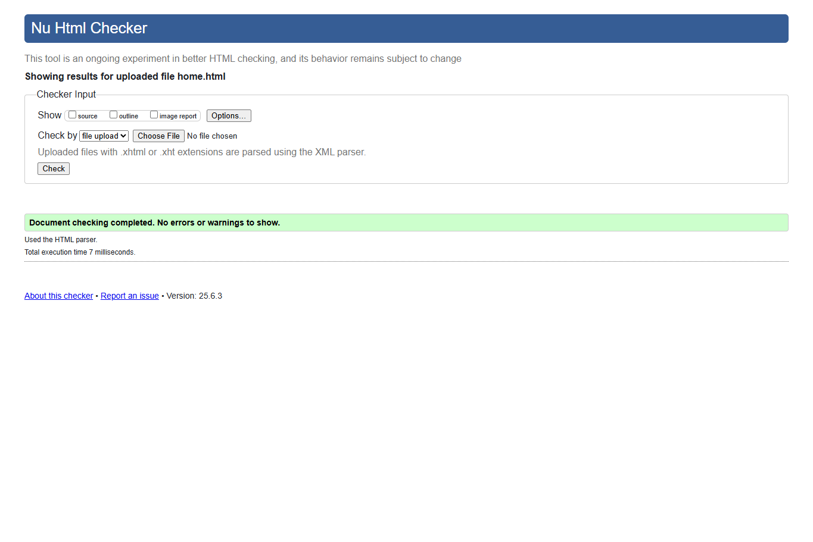
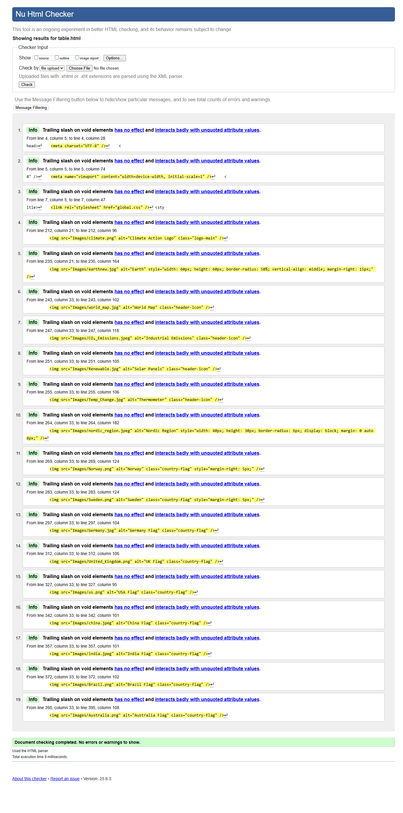
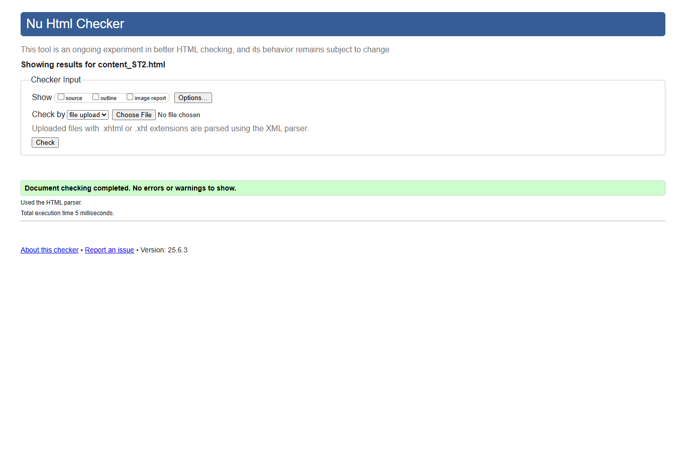
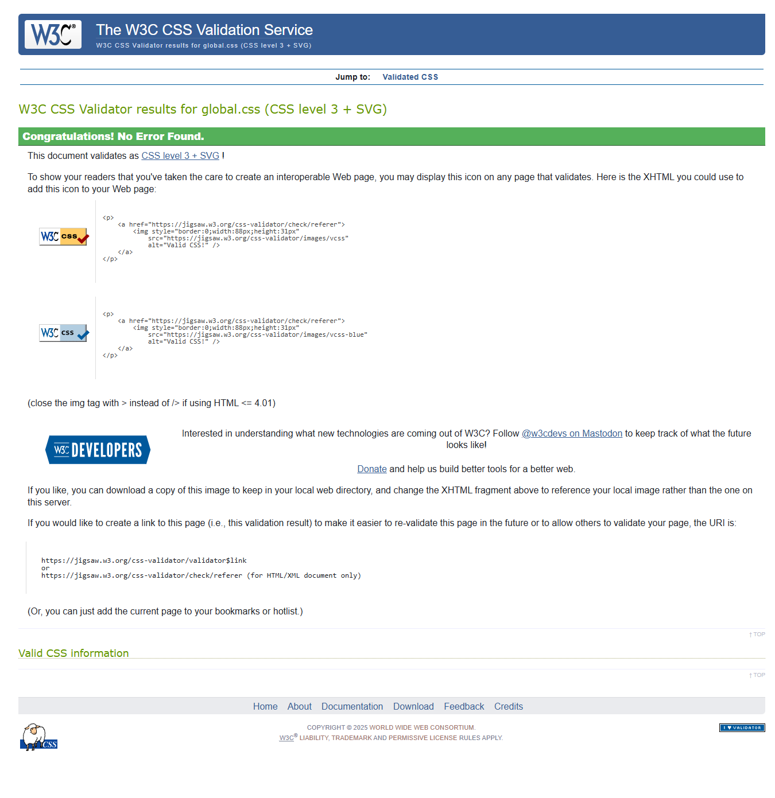
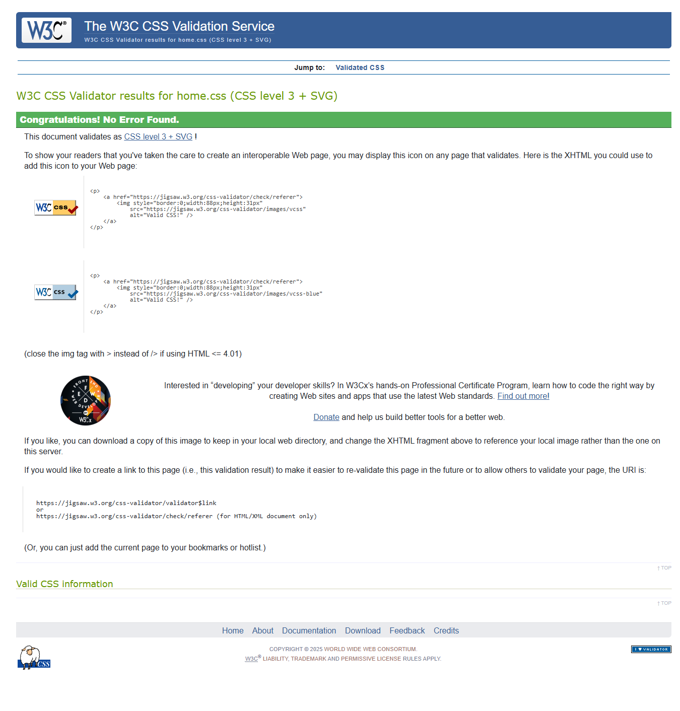
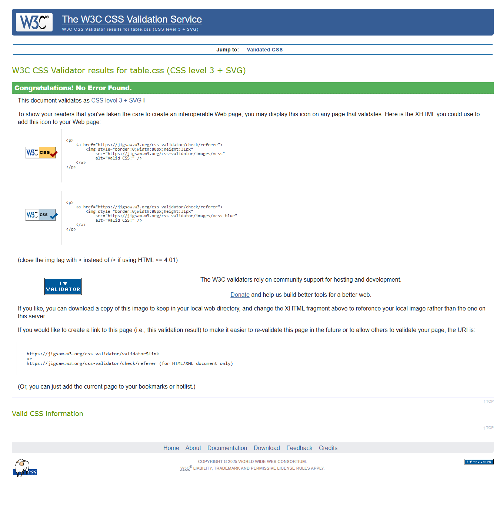
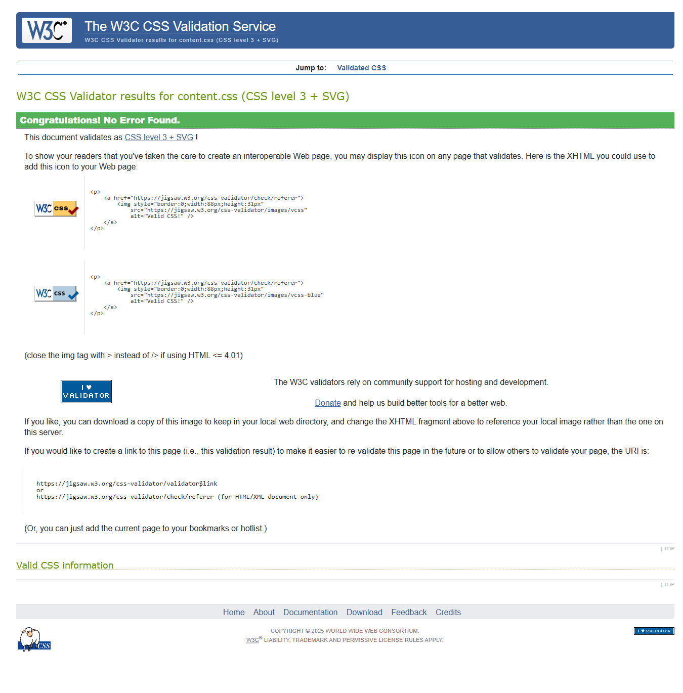

Validation Report – Student 2
← Go to Home
home.html
HTML Validation: Passed without errors or critical warnings.

Reflection: Semantic HTML was used with proper image alt text and heading structure. Navigation is responsive. Passed W3C validation successfully.
table.html
HTML Validation: Passed without errors. Proper use of rowspan, colspan, and data classes.

Reflection: Table layout passed successfully with hover effects and column formatting. All images had descriptive alt tags.
content_ST2.html
HTML Validation: Passed cleanly with no warnings. Internal links and anchor navigation were implemented correctly.

Reflection: Internal sections and navigation passed W3C validation. Responsive design worked well across breakpoints.
CSS Files
global.css
Validation: Passed with no errors or warnings.

Reflection: The global stylesheet ensures consistent styling across all pages and passed W3C CSS validation successfully.
home.css
Validation: Passed with no issues.

Reflection: Custom styling for the homepage used responsive layouts, grid cards, and hover effects without validation errors.
table.css
Validation: Passed successfully.

Reflection: Styling included zebra striping, color indicators, and responsive design techniques. All rules passed validation cleanly.
content.css
Validation: Passed successfully.

Reflection: Content page used media queries, consistent padding, and heading styles that followed CSS best practices.
page-editor.css
Validation: Passed with no warnings or errors.
Reflection: The separate stylesheet improves modularity and keeps editor styles independent. All rules passed validation successfully.